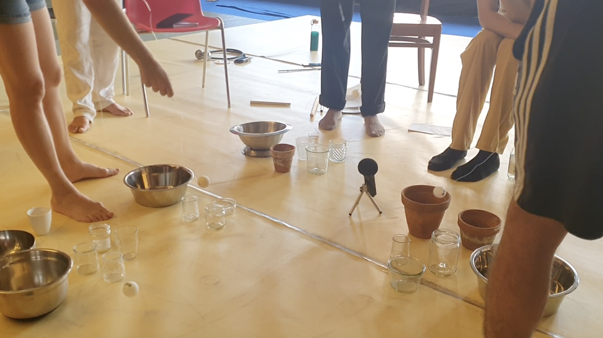
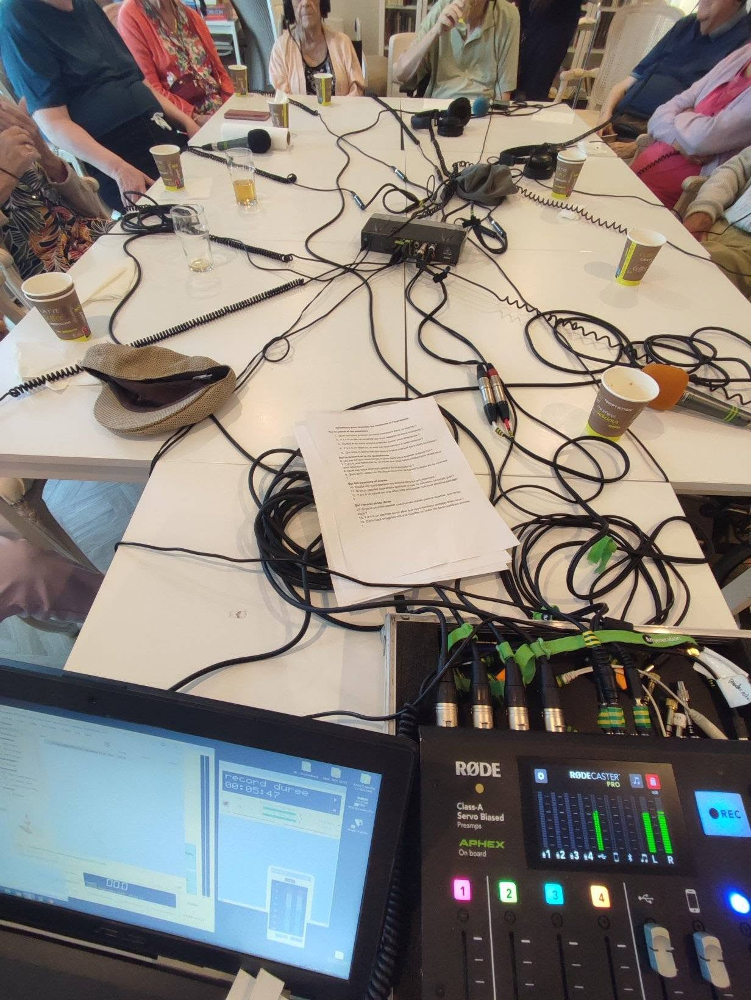
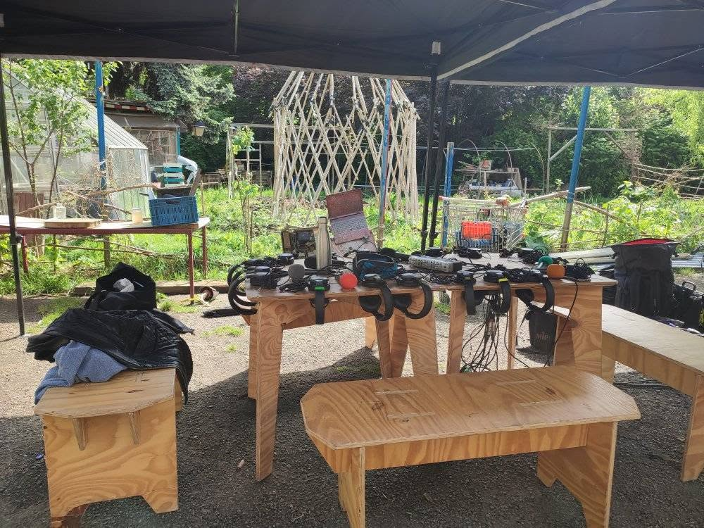

01
Les bruits qui nous parlent
Atelier Graphoui
RADIO / VOICE / LISTENING / MOVEMENT
A series of weekly radio, voice and movement workshops developed with participants of the Paul Sivadon psychiatric day hospital at CHU Brugmann in Laeken, Brussels.
The workshops explored recording, listening, vocal expression and collective storytelling through different types of microphones and recording situations.
Developed in collaboration with participants and with the support and involvement of the medical team — psychologists and occupational therapists — the sessions gradually led to the creation of narratives, voices and recorded stories.

WEEKLY WORKSHOPS
Each session created a space for experimentation through voice, movement, listening and recording.
Different microphones and recording techniques were introduced as tools for exploring proximity, distance, rhythm, breath and the qualities of individual and collective voices.
Rather than following a predetermined script, recordings emerged progressively through exercises, conversations, improvisations and shared listening.


FROM VOICE TO NARRATION
Over the course of the workshops, fragments of speech, sounds, movements and recorded voices became material for creating narratives and stories.
Recording was approached not only as a way of documenting voices, but as a playful tool for listening differently — to oneself, to others and to the surrounding environment.
LISTEN
A selection of recordings created through the workshop process.
Les bruits qui nous parlent
Atelier Graphoui
Les chants du Cosmacorpo
Atelier Graphoui
CONTEXT
PLACE
Paul Sivadon Day Hospital
CHU Brugmann
Laeken, Brussels
FORMAT
Weekly workshops
PRACTICE
Radio / Voice / Movement
Listening / Recording
COLLABORATION
Developed with participants of the Paul Sivadon psychiatric day hospital, with the support and participation of the medical team, including psychologists and occupational therapists.
WORKSHOP DESIGN & FACILITATION
Radio, voice and movement workshops, recording, listening and collective storytelling.